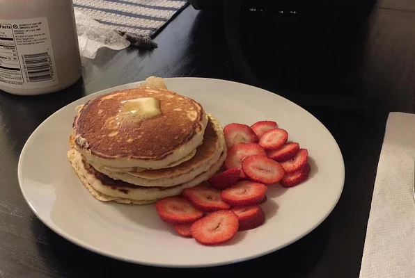

Good Old Fashioned Pancakes

Description
This is a recipe for everybody's favorite breakfast classic. Old fashioned style,
fluffy, and easy to make PANCAKES! Continue on down for the ingredients list and
step by step guide on how to craft this breakfast staple for yourself!
Recipe provided by Dakota Kelly on allrecipes.com.
Ingredients
- 1 1/2 cups all-purpose flour
- 3 1/2 teaspooons baking powder
- 1 teaspoon salt
- 1 tablespoon white sugar
- 1 1/4 cups milk
- 1 egg
- 3 tablespoons butter, melted
Steps
- In a large bowl, sift together the flour, baking powder, salt and sugar.
Make a well in the center and our in the milk, egg, and melted butter; mix until smooth.
- Heat a lightly oiled griddle or frying pan over medium-high heat. Pour or scoop
the batter onto the griddle, using approximately 1/4 cup for each pancake. Brown on
both sides and serve hot!